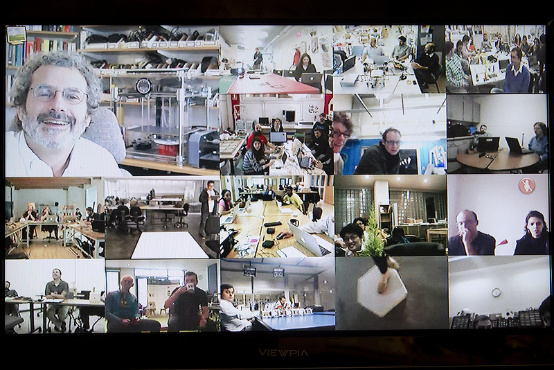

La sesión dio inicio con la presentacion via stream de Neil . Se mostro un resumen del proceso de evolucion en la fabricacion. A su vez pudimos observacion la presencia de los principales lideres de los FabLab´s alrededor del Mundo.

The Fab Academy - 2015 Schedule
2.-Computer-aided design (Feb 4)
3.-Computer-controlled cutting (Feb 11)
4.-Electronics production (Feb 18)
5.-3D scanning and printing (Feb 25)
6.-Electronics design (Mar 4)
7.-Embedded programming (Mar 11)
8.-Computer-controlled machining (Mar 18)
9.-Molding and casting (Mar 25)
10.-Break (Apr 1)
11.-Input devices (Apr 8)
12.-Output devices (Apr 15)
13.-Composites (Apr 22)
14.-Networking and communications (Apr 29)
15.-Mechanical design, machine design (May 6)
16.-Interface and application programming (May 13)
17.-Applications and implications (May 20)
18.-Invention, intellectual property, and income (May 27)
19.-Project development (Jun 3)
20.-Project presentation (Jun 10)